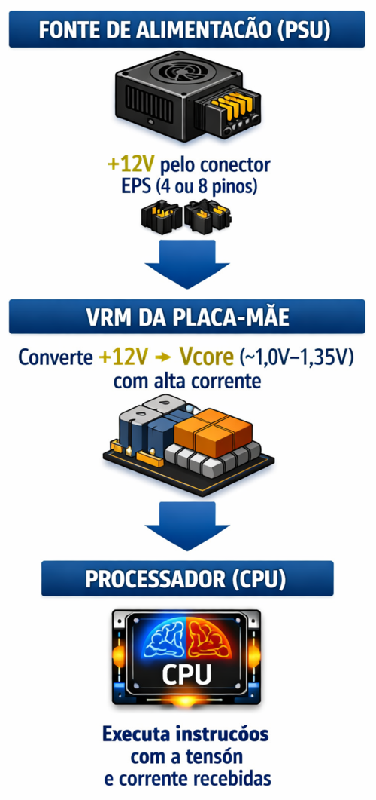

AULA 05 — PROCESSADORES: ARQUITETURA, SOQUETES E ENERGIA
1. Introdução
O processador, também chamado de CPU (Central Processing Unit), é o componente responsável por executar as instruções dos programas. É o "cérebro" do computador — tudo que acontece no sistema passa, em algum momento, pelo processador.
Para funcionar, a CPU depende de:
- Um socket compatível na placa-mãe
- Energia estável e precisa fornecida pelo VRM
- Comunicação direta com a memória RAM e os demais componentes
2. Fabricantes e Linhas Desktop
Intel — Linha Core
| Segmento | Exemplos | Característica |
|---|---|---|
| Core i3 | i3-12100, i3-13100 | Entrada, uso básico |
| Core i5 | i5-12400, i5-13600K | Intermediário, melhor custo-benefício |
| Core i7 | i7-13700K | Alto desempenho |
| Core i9 | i9-13900K | Topo de linha desktop |
| Core Ultra | Ultra 5, Ultra 7, Ultra 9 | Nova nomenclatura (14ª+ geração) |
AMD — Linha Ryzen
| Segmento | Exemplos | Característica |
|---|---|---|
| Ryzen 3 | Ryzen 3 4100 | Entrada |
| Ryzen 5 | Ryzen 5 5600, 7600X | Intermediário, amplamente usado |
| Ryzen 7 | Ryzen 7 7700X | Alto desempenho |
| Ryzen 9 | Ryzen 9 7950X | Topo de linha desktop |
💡 O sufixo no nome do processador indica características importantes: K (Intel, desbloqueado para overclock), X (AMD, alto desempenho), G (AMD, com GPU integrada), F (Intel, sem GPU integrada).
3. Soquetes e Compatibilidade
O socket define a interface mecânica e elétrica entre a CPU e a placa-mãe. Cada socket aceita apenas os processadores projetados para ele.
Intel — Soquetes recentes
| Socket | Gerações compatíveis | Mecanismo |
|---|---|---|
| LGA1200 | 10ª e 11ª geração | LGA (pinos na placa) |
| LGA1700 | 12ª, 13ª e 14ª geração | LGA (pinos na placa) |
| LGA1851 | Core Ultra 200 (Arrow Lake) | LGA (pinos na placa) |
AMD — Soquetes recentes
| Socket | Gerações compatíveis | Mecanismo |
|---|---|---|
| AM4 | Ryzen 1000 a 5000 | PGA (pinos na CPU) |
| AM5 | Ryzen 7000+ | LGA (pinos na placa) |
⚠️ A Intel historicamente troca de socket a cada uma ou duas gerações. A AMD manteve o AM4 por seis anos (2017–2022), o que foi uma vantagem econômica relevante para o mercado — o AM5 segue a mesma proposta de longevidade.
4. Arquitetura Interna — Conceitos Fundamentais
4.1 Núcleos (Cores)
Cada núcleo é uma unidade de processamento independente. Um processador com 6 núcleos pode executar 6 tarefas simultaneamente.
- Processadores modernos possuem entre 4 e 24 núcleos no segmento desktop.
- Intel (a partir da 12ª geração) adota arquitetura híbrida: P-cores (Performance) para tarefas exigentes e E-cores (Efficiency) para tarefas em segundo plano.
4.2 Threads
Thread é o fluxo de execução de instruções. Com Hyper-Threading (Intel) ou SMT (AMD), cada núcleo físico pode processar 2 threads simultaneamente.
Exemplo: processador com 6 núcleos e HT/SMT ativo → 12 threads visíveis pelo sistema operacional.
4.3 Clock (Frequência)
Medido em GHz (gigahertz), indica quantos ciclos de processamento ocorrem por segundo.
| Modo | Descrição |
|---|---|
| Clock base | Frequência mínima garantida em operação normal |
| Clock boost (Turbo/Precision Boost) | Frequência máxima atingida automaticamente em cargas pontuais |
💡 Um processador com clock base de 3,6 GHz e boost de 5,0 GHz opera na maioria do tempo entre esses dois valores, ajustado automaticamente conforme a demanda e a temperatura.
4.4 Cache
Memória ultrarrápida integrada ao processador, organizada em níveis hierárquicos:
| Nível | Velocidade | Capacidade típica | Localização |
|---|---|---|---|
| L1 | ~1 ns | 32–64 KB por núcleo | Dentro de cada núcleo |
| L2 | ~3–5 ns | 256 KB–1 MB por núcleo | Dentro de cada núcleo |
| L3 | ~10–30 ns | 16–96 MB (compartilhado) | Compartilhado entre núcleos |
💡 Quanto maior o cache L3, menos o processador precisa buscar dados na RAM (que é significativamente mais lenta). Isso impacta diretamente o desempenho em jogos e aplicações que manipulam grandes volumes de dados.
5. TDP — Thermal Design Power
O que é
O TDP é a quantidade máxima de calor que o sistema de resfriamento precisa ser capaz de dissipar, expressa em Watts (W). Na prática, é usado como referência de consumo de energia do processador.
⚠️ TDP não é exatamente o consumo real de energia — é uma especificação térmica. Processadores modernos podem ultrapassar o TDP em boost, especialmente com coolers mais robustos.
Valores de referência por segmento
| Segmento | TDP típico | Observação |
|---|---|---|
| Entrada (i3 / Ryzen 3) | 60–65W | Cooler de caixa geralmente suficiente |
| Intermediário (i5 / Ryzen 5) | 65–125W | Cooler aftermarket recomendado para K/X |
| Alto desempenho (i7–i9 / Ryzen 7–9) | 125–253W | Exige cooler robusto ou water cooling |
6. Tensão de Operação (Vcore)
O que é
A Vcore é a tensão de alimentação diretamente aplicada ao processador pelo VRM da placa-mãe. É a tensão mais crítica para a estabilidade e a vida útil da CPU.
Valores típicos
| Processador | Vcore típica em operação |
|---|---|
| Intel Core (12ª–14ª geração) | 0,9V – 1,35V |
| AMD Ryzen 5000 (AM4) | 0,9V – 1,30V |
| AMD Ryzen 7000 (AM5) | 0,9V – 1,35V |
💡 A Vcore varia dinamicamente ciclo a ciclo. Em idle (ocioso) pode cair para 0,9V; sob carga máxima sobe para 1,3V–1,4V. Esse ajuste dinâmico é gerenciado pelo VRM em conjunto com o controlador interno da CPU.
⚠️ Tensões acima de 1,4V por períodos prolongados aceleram a degradação dos transistores internos da CPU — risco real em overclocking sem controle adequado.
7. Corrente Elétrica na CPU
Como calcular a corrente estimada
Usando a relação da Aula 01:
P = V × I → I = P / VExemplos reais
| Processador | TDP | Vcore típica | Corrente estimada no VRM (entrada +12V) |
|---|---|---|---|
| Intel i5-13600K | 125W (base) / 181W (boost) | ~1,2V | ~15A (base) / ~21A (boost) no trilho +12V |
| AMD Ryzen 5 7600X | 105W (base) / 142W (boost) | ~1,1V | ~12A (base) / ~16A (boost) no trilho +12V |
| Intel i9-13900K | 125W (base) / 253W (boost) | ~1,3V | ~21A (base) / ~35A (boost) no trilho +12V |
💡 A corrente calculada é referente ao trilho +12V do conector EPS que alimenta o VRM — não à corrente que entra diretamente na CPU. O VRM converte +12V em Vcore (~1,1V–1,3V), o que eleva ainda mais a corrente no lado de saída: um i9-13900K a 253W com Vcore de 1,3V exige ~195A saindo do VRM para a CPU.
⚠️ Isso explica por que placas de alto desempenho possuem VRMs com muitas fases e dissipadores robustos — a corrente é alta e o calor gerado é significativo.
8. O Papel do VRM na Entrega de Energia

Qualidade do VRM importa porque:
| VRM fraco | VRM robusto |
|---|---|
| Menos fases de regulação | Mais fases = corrente distribuída |
| Aquece mais sob carga | Dissipação térmica mais eficiente |
| Tensão instável (ripple alto) | Tensão estável mesmo em boost |
| Limita desempenho do processador | Permite operação no TDP máximo |
🔧 Na prática de bancada: ao diagnosticar travamentos sob carga em um sistema aparentemente bem montado, o VRM superaquecido é um suspeito relevante — especialmente em placas de entrada com CPUs de médio-alto desempenho.
9. Instalação Física do Processador
Cuidados essenciais
- LGA (Intel): não tocar nos pinos da placa-mãe. A CPU possui contatos planos. Alinhar pelo entalhe e pela seta indicadora antes de baixar a alavanca.
- PGA (AMD AM4): não tocar nos pinos da CPU. Alinhar pelo triângulo indicador no canto. Encaixar verticalmente sem forçar.
- LGA (AMD AM5): mesma lógica do LGA Intel — pinos na placa, contatos na CPU.
Pasta térmica
A pasta térmica preenche as microimperfeições entre o IHS (tampa metálica da CPU) e o cooler, garantindo transferência de calor eficiente.
- Quantidade: uma gota do tamanho de um grão de arroz no centro do IHS.
- Excesso: escorrega para os lados e pode contaminar o socket.
- Ausência: superaquecimento imediato, thermal throttling ou desligamento por proteção.
Síntese da Aula
| Conceito | Ponto central |
|---|---|
| Socket | Define compatibilidade CPU ↔ placa-mãe |
| Núcleos / Threads | Capacidade de paralelismo de tarefas |
| Clock | Velocidade de execução por núcleo |
| Cache | Memória interna ultrarrápida; reduz acesso à RAM |
| TDP | Referência de dissipação térmica e consumo |
| Vcore | Tensão dinâmica entregue pelo VRM à CPU |
| Corrente no VRM | Alta corrente de saída (~100–200A) a baixa tensão |
| VRM | Converte +12V EPS em Vcore; qualidade impacta estabilidade |
| Instalação | Alinhamento, sem força, pasta térmica correta |